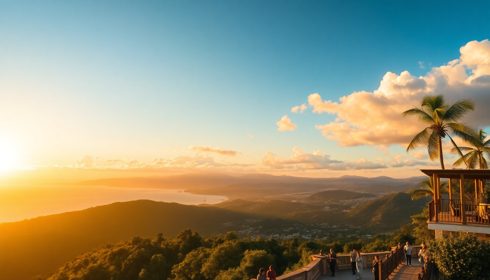

7-Day Colombia Itinerary: Bogota, Medellin, Cartagena

I landed in Bogota on a Tuesday morning with a loose plan: hit three cities in seven days without losing my mind to travel fatigue. Colombia’s three big players—Bogota, Medellin, Cartagena—are surprisingly doable in a week if you chain them efficiently. This itinerary skips the fluff and tells you exactly how to move, eat, and sleep without wasting time or money.
How do you get between Bogota, Medellin, and Cartagena efficiently?
Fly. Always fly. Driving between these cities eats days, and bus rides take 10+ hours over winding mountain roads. I booked one-way flights on Avianca and LATAM for around $40–$60 per leg. The Bogota to Medellin flight is 50 minutes; Medellin to Cartagena is about an hour. Book morning flights to maximize your day. Viva Air (now merged) and Wingo are budget options but check baggage fees—carry-on only saves you hassle.
What should you do in Bogota (Days 1–2)?
Start in La Candelaria, the historic neighborhood. Cobblestone streets, graffiti murals, and the Museo del Oro (Gold Museum) are worth two hours—skip the guided tour, just wander the main hall. For lunch, hit La Puerta de la Candelaria for ajiaco, the chicken-and-potato soup that’s Bogota’s signature. It’s hearty, cheap, and fills you up before the altitude hits.
- Monserrate: Take the cable car up at sunset. The view over the whole city is worth the $10 round trip. Go on a clear day—cloud cover kills it.
- Usaquén Flea Market: Sundays only. Grab arepas from a street vendor and browse handmade stuff. Overpriced for locals, fine for tourists.
- Stay: I crashed at Hotel de la Ópera in La Candelaria. It’s colonial-style, quiet, and a 5-minute walk to the main square. The rooftop terrace is a solid spot to decompress.
Don’t bother with the Botero Museum unless you’re a huge art fan—it’s small and crowded. Instead, walk the Carrera 7 pedestrian street for people-watching and cheap empanadas.
How to spend time in Medellin (Days 3–4)?
Medellin is the highlight. Fly in early, drop bags, and head straight to Comuna 13. The escalators and street art tell the neighborhood’s transformation story. I took a free walking tour (tip $10) with a local guide named Carlos—he grew up there and gave real context, not sanitized history.
- El Poblado: The tourist hub. Bars, restaurants, hostels. Parque Lleras is loud at night—fine for drinks, not for sleeping. Stay in Patio Bonito instead, a quieter pocket with better food.
- Metro Cable: Ride line K up to Santo Domingo for panoramic views. Cheap ($1) and safe during the day.
- Food: Mondongo’s in El Poblado for bandeja paisa—the platter is ridiculous (rice, beans, plantain, chorizo, chicharrón, egg). Share it with a friend unless you’re starving.
- Stay: I booked Hotel Patio del Mundo in Patio Bonito. Rooftop pool, solid breakfast, and walking distance to the metro. No frills, but clean and quiet.
Skip the Pablo Escobar tour—it’s exploitative and the guides often romanticize the violence. Medellin has way more to offer.
Is one day enough for Cartagena (Days 5–7)?
Yes, but only if you plan right. Fly in from Medellin by noon. Cartagena is hot and humid—plan around it. Spend the first afternoon in the Walled City (Centro Histórico) . The streets are narrow and colorful, but it’s packed with vendors. Walk Calle de la Sierpe for quieter corners and less hassle.
- Getsemani: The grittier, cooler neighbor. Plaza de la Trinidad is where locals hang at night. Street food here is better and cheaper than inside the walled city.
- Castillo San Felipe de Barajas: The fortress is impressive from the outside—skip the interior tour (it’s a maze of dark tunnels with little signage). Just climb the ramparts for the view.
- Bocagrande: The beach strip. Water is murky, and hawkers are relentless. Better to take a boat to Islas del Rosario if you want clear water—book a half-day tour for $30.
- Stay: Casa del Arzobispado inside the walled city. It’s a converted colonial mansion with a plunge pool. Pricey but worth it for the location and quiet courtyard.
Where should you eat in Cartagena?
Don’t fall for the tourist-trap ceviche stands on the main square. Instead, walk to La Cocina de Pepina in Getsemani for seafood rice—it’s a hole-in-the-wall with plastic chairs and the best coconut rice I had in Colombia. For a nicer dinner, Celele (in the walled city) does modern Caribbean cuisine. Make a reservation a week ahead—it’s small.
- Street food: Arepas de huevo from a cart near the clock tower. They’re deep-fried, messy, and perfect.
- Avoid: The “romantic dinner” spots on the walls—overpriced and the food is mediocre.
How do you handle safety and logistics across these cities?
Colombia feels safer than the reputation, but stay smart. In Bogota, don’t flash phones in La Candelaria after dark. In Medellin, avoid walking alone in El Centro at night. In Cartagena, stick to well-lit streets in Getsemani.
- eSIM: I used Airalo for data—$10 for 5GB, worked across all three cities. No SIM swapping needed.
- Cash: Colombia is still cash-heavy for small purchases. ATMs charge fees—withdraw $100 at a time from Bancolombia machines inside malls.
- Uber vs. Taxi: Uber works in Bogota and Medellin but is technically illegal. Use Didí or InDriver instead—they’re local apps with fixed pricing. In Cartagena, negotiate taxis upfront; they’ll scam you if you don’t.
FAQ
Is 7 days enough for Colombia? Yes, if you stick to these three cities and fly between them. You’ll feel rushed, but you’ll hit the highlights. Skip day trips to the Coffee Region or Tayrona—save those for a longer trip. Each city needs at least a full day to get a real sense.
What’s the best time of year for this itinerary? December to March is dry season—less rain in Bogota and Medellin, and tolerable humidity in Cartagena. Avoid April and October (rainy) and July (crowded with domestic tourists). Cartagena is miserable in August—heat index hits 100°F.
Do I need to speak Spanish? It helps, but you can get by with basic phrases in tourist areas. In Bogota and Medellin, younger people speak some English. In Cartagena, restaurant menus often have English translations. Download Google Translate offline for the rest.
Conclusion
- Fly between cities—buses are too slow for a 7-day trip.
- Skip the Pablo Escobar tours and overpriced romantic dinners.
- Stay in La Candelaria (Bogota), Patio Bonito (Medellin), and the walled city (Cartagena).
- Use cash for small purchases, Airalo for data, and Didí for rides.
- Cartagena is worth one full day—spend the rest in Medellin.